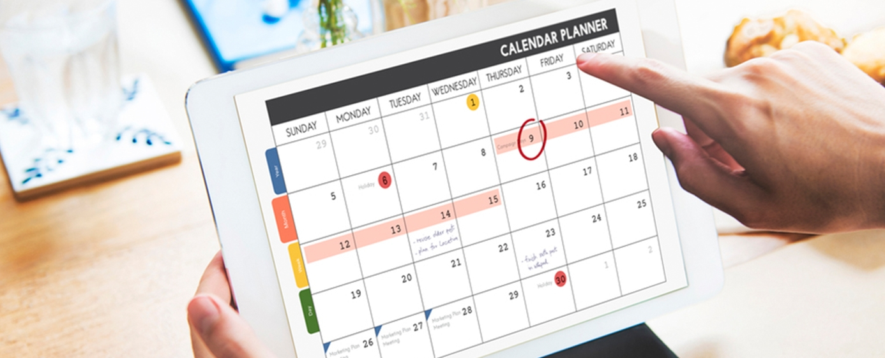

Populárne články

Ako byť disciplinovanejší
Ak sa pozriete na svoj súčasný život, čo je dôvodom, že nie ste takí úspešní, šťastní alebo zdraví, ako by ste v tejto fáze života mohli byť? Okrem mnohých výhovoriek existuje pravdepodobne len jeden jednoduchý dôvod: nedostatok sebadisciplíny. Jednoducho nerobíte to, čo je potrebné na dosiahnutie takej úrovne úspechu, po akej túžite. Keď sa nad tým zamyslíte, čo vlastne potrebujete na to, aby ste boli úspešní vo všetkých oblastiach svojho života?
Pravdepodobne to nie je žiadne tajomstvo. Každý vie, čo treba urobiť, aby sa dostal do formy – no koľkým sa to skutočne darí? Každý vie, čo treba robiť pre lepšie pracovné výsledky – no koľkí sú ochotní to aj urobiť? Každý vie, ktorým potravinám sa vyhýbať a ktoré, naopak, jesť – no väčšina ľudí si aj tak naďalej dopraje muffiny s kúskami čokolády. Skrátka, všetky vedomosti sveta sú nanič, ak vám chýba sebadisciplína na ich využitie. Elbert Hubbard definoval sebadisciplínu ako „schopnosť urobiť to, čo treba, vtedy, keď to treba urobiť – bez ohľadu na to, či sa vám práve chce, alebo nie“. Je to tá najdôležitejšia zručnosť, ktorú potrebujete na dosiahnutie úspechu v akejkoľvek oblasti. Úspech v živote pramení z krokov, ktoré podnikáte pravidelne a dôsledne – a práve sebadisciplína je tým, čo vám to umožňuje.
TU JE 6 ÚČINNÝCH SPÔSOBOV, AKO SI VYBUDOVAŤ NEZLOMNÚ SEBADISCIPLÍNU:
1. „Ak sa to má stať, záleží to odo mňa.“ — William Johnson
Bez ohľadu na to, aké sú vaše životné ciele, existuje jeden dôležitý zákon, ktorým sa musíte riadiť, ak chcete byť úspešní: nikto iný za vás nevystúpi po rebríku úspechu. Nikto iný nie je zodpovedný za vaše zdravie, bohatstvo, šťastie či úspech. Od dňa, keď opustíte rodičovský dom a začnete robiť vlastné rozhodnutia, nesiete zodpovednosť za svoj život a za voľby, ktoré robíte. Vy si vyberáte prácu, ktorú vykonávate, človeka, s ktorým žijete, aj to, koľko sa každý deň venujete pohybu. Iba vy môžete rozhodnúť, ako naložíte so svojím časom; vaše každodenné rozhodnutia môžu váš život buď pozdvihnúť, alebo zničiť. Ak túžite po lepšom živote, musíte robiť lepšie rozhodnutia. Môžete síce celý život viniť iných za to, že nemáte výsledky alebo nie ste šťastní, no nič tým nezmeníte. Svoj život môžete zmeniť jedine vy, a to zmenou svojich rozhodnutí. Prevezmite zodpovednosť za všetko vo svojom živote, aj za veci, ktoré nemôžete priamo ovplyvniť. Hoci niečo nemusí byť pod vašou priamou kontrolou, vždy si môžete zvoliť, ako na to zareagujete.
2. VEĽKÝ NEPRIATEĽ ÚSPECHU
Podľa motivačného rečníka Briana Tracyho je najväčším nepriateľom úspechu cesta najmenšieho odporu. Ak uprednostníte to, čo je zábavné a ľahké, pred tým, čo je nevyhnutné, nikdy nedosiahnete takú úroveň úspechu a šťastia, akú by ste vo svojom živote mohli dosiahnuť. Je to preto, že každé veľké víťazstvo si vyžaduje veľkú obeť. Keby bol úspech ľahký, úspešný by bol každý. No keďže úspech v ktorejkoľvek oblasti života si vyžaduje tvrdú prácu a obete, väčšina ľudí nikdy nenaplno nevyužije svoj potenciál. Kedykoľvek sa rozhodnete nerobiť to, čo by ste robiť mali, nielenže premárnite príležitosť na osobný rast, ale stratíte aj sebadôveru. Začnete sa vnímať ako leniví a neúspešní – a tento obraz o sebe samom sa stane sebapľňajúcim sa proroctvom. Na dosiahnutie akéhokoľvek cieľa potrebujete len tri veci: jasnú predstavu o tom, čo chcete, plán, ako to dosiahnuť, a intenzívne konanie, ktoré budete dlhodobo a dôsledne opakovať! Hoci prvé dve zložky sú tou jednoduchšou časťou rovnice, väčšina ľudí má problém s tou treťou: tvrdou prácou. Vďaka tvrdej práci môžete dosiahnuť čokoľvek, preto je nevyhnutné vybudovať si návyk uprednostňovať to, čo je náročné a potrebné, pred tým, čo je zábavné a ľahké. Práve toto je pravdepodobne tá najistejšia cesta k úspechu v živote.
3. MYSLITE DLHODOBÉ
Ako povedal Abraham Lincoln: „Najlepší spôsob, ako predpovedať budúcnosť, je vytvoriť ju.“ Ak niekedy premýšľate nad tým, kde budete o 10 rokov, pozrite sa na svoj súčasný život. Aké kroky podnikáte, aby ste svoje ciele premenili na skutočnosť? Koľko kníh čítate pre svoj osobný rast a koľko nových vecí sa učíte? S akými ľuďmi sa stretávate? Vynakladáte dnes úsilie potrebné na dosiahnutie svojich cieľov?
Ľudia si často myslia, že ich život sa v budúcnosti zrazu zmení vďaka nejakej magickej udalosti, no v skutočnosti to tak nie je. Váš život sa zmení len do takej miery, do akej sa zmeníte vy sami. Ak nie ste spokojní so svojou súčasnou situáciou, podnikáte kroky na jej zmenu? Ak nie, potom len snívate s otvorenými očami. Nič sa nezmení, kým nezmeníte to, čo robíte každý deň. Ako poznamenal Aristoteles už pred viac ako 2000 rokmi: „Sme tým, čo opakovane robíme. Dokonalosť teda nie je jednorazový čin, ale zvyk.“ Skvelým spôsobom, ako aktívne formovať svoju budúcnosť, je položiť si otázku: Keby som už dosiahol svoje ciele, ako by som sa správal v každodennom živote? Aké knihy by som čítal, ako často by som cvičil a ako by som trávil čas v práci? Keď si na tieto otázky odpoviete, budete vedieť, čo treba robiť. Správajte sa tak, akoby ste už boli úspešní.
4. PREKÁŽKY SÚ SÚČASŤOU ÚSPECHU
V živote nič, čo stojí za to, neprichádza ľahko. Ak chcete uspieť, musíte priniesť obete v podobe času, úsilia, bolesti a tvrdej práce. Čaká vás mnoho prekážok, a práve keď sa budete blížiť k úspechu, objavia sa ďalšie ťažkosti, ktoré preveria, ako veľmi po ňom skutočne túžite. Úspech dosiahnete až vtedy, keď prekonáte jednu skúšku za druhou. Veľkou životnou tragédiou je, že väčšina ľudí to vzdá tesne predtým, než dosiahnu úspech. Sú už takmer v cieli – stačí len posledné úsilie, aby skórovali a vychutnali si sladké víťazstvo. No práve v tej chvíli im stojí v ceste posledná prekážka – posledné zlyhanie, ktoré musia prekonať. Príliš veľa ľudí to vzdá práve v tomto momente, bez toho, aby si uvedomili, ako blízko sú. Ak si máte z tohto textu odniesť len jednu vec, nech je to táto: keď narazíte na zlyhanie či nepriazeň osudu, pokračujte ďalej! Úspech musí byť ťažko dosiahnuteľný – práve preto je taký výnimočný. Keby to bolo ľahké, dokázal by to každý. No keďže je to náročné, máte jedinečnú príležitosť odlíšiť sa od tých, ktorí po úspechu netúžia tak silno ako vy. Jediný spôsob, ako osobnostne rásť, je čeliť tým najväčším životným výzvam a vytrvať dostatočne dlho na to, aby ste uspeli. Bez ohľadu na to, ako dlho to potrvá alebo aké ťažké to bude, vždy majte na pamäti slová motivačného rečníka Lesa Browna: „Ešte nie je koniec, kým nezvíťazím!“
5. PREPISUJ SVOJE CIELE KAŽDÝ DEŇ
Ak chcete každý deň maximalizovať svoju sebadisciplínu, musíte mať na pamäti širší kontext. Iba vtedy, keď si budete pripomínať, prečo robíte to, čo robíte, podniknete potrebné kroky a vytrváte, aj keď prídu ťažké chvíle. Koniec koncov, nepracujete tak tvrdo len tak pre nič za nič. Máte konkrétne ciele, ktoré chcete dosiahnuť a vďaka ktorým všetko to úsilie stojí za to. Ako povedal Nietzsche: „Kto má prečo žiť, znesie takmer akékoľvek ako.“ Verím, že je to úplná pravda. Ak viete, čo chcete robiť, a máte na to dostatok dôvodov, urobíte čokoľvek, čo bude potrebné. Problém je v tom, že sa často tak ponoríme do práce a dosahovania cieľov, až zabudneme, prečo sme s tým vôbec začali. Zabúdame na dôvody svojho konania a namiesto toho nás zahltí zdanlivo nekonečný zoznam úloh. Niet divu, že väčšina ľudí pôsobí nezaujato, ba dokonca znudene životom: nemajú totiž žiadne ciele, za ktorými by kráčali! Najjednoduchším spôsobom, ako tento problém riešiť, je každodenné zapisovanie cieľov a predstavovanie si budúcnosti presne tak, ako ju chcete mať. Každé ráno po prebudení si zapíšte tie najdôležitejšie ciele, ktoré vo svojom živote máte. Nielenže vás to okamžite motivuje a nadchne, ale zároveň získate úplne jasnú predstavu o tom, čo musíte urobiť, aby ste uspeli. Iba vtedy, keď sa sústredíte na svoje ciele a svoju životnú víziu, dokážete robiť rozhodnutia, ktoré k týmto cieľom skutočne prispievajú.
6. Rozhodnite sa vopred, že sa nikdy nevzdáte.
Aby ste v ťažkých chvíľach zostali silní, vopred si premyslite, ako budete reagovať, keď nastanú problémy. Musíte mať plán pre prípad, že sa situácia vyhrotí – inak bude príliš ľahké jednoducho to vzdať. Keď si stanovujete ciele, zaviažte sa, že ich dosiahnete, bez ohľadu na to, aké náročné to môže byť. Ujasnite si, ako budete reagovať na zlyhania a prekážky, aby ste sa z nich mohli pozviechať silnejší a lepší než kedykoľvek predtým. Ak prijmete tento záväzok a nikdy ho neporušíte, uspejete vo všetkom, čo si zaumienite. Možno nie okamžite, ale určite áno.

Ako odmerať veľkosť porcií
pomocou rúk
Prečítať článok

Stručný sprievodca intuitívnym
stravovaním
Prečítať článok

Vodná bilancia, význam
správnej hydratácie
Prečítať článok

Ako kúpiť tie najlepšie
nohavice na jogu
Prečítať článok

Tipy na čisté stravovanie
Rozpočet
Prečítať článok

5 wellness trendov, ktoré si zamilujete
Uvidíme sa v roku 2019
Prečítať článok

Kokosový olej na vlasy, ktoré
Žiari
Prečítať článok